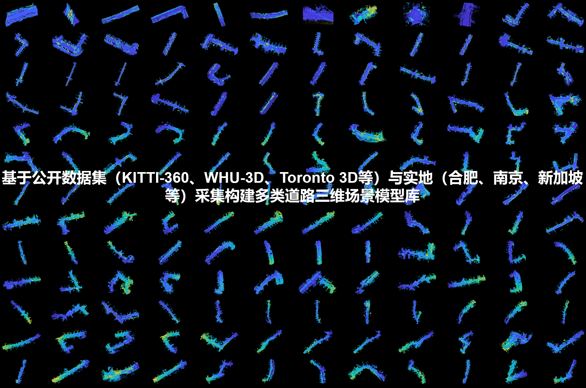

数据集简介 Introduction
CRSLP Dataset 是第一个面向路侧LiDAR优化布设方法测试的大规模虚实融合数据集，
包含13个地点，超100个交通场景，超过900组布设方案及对应的IoU序列数据，并提供部分场景的连续点云数据序列与GT-BBox，旨在推动路侧协同感知设备优化布设领域的相关研究。
CRSLP Dataset is the first virtual-real fusion dataset for benchmarking cooperative roadside Lidar (CRSL) placement, which covers
13 sites, over 100 traffic scenarios, and more than 900 CRSL placement plans (with corresponding long IoU sequence) and continuous point cloud data sequences and GT-BBox.
CRSLP aims to help researchers in the domain test and improve their placement optimization approaches.
主要特点 Main Features

多地点实景点云数据 Real-world point cloud data at multi-sites

多配置方案IoU分布情况 IoU boxplots of different CRSL configs
CRSLP 工作流 workflow
多场景仿真 Multi-scenario simulations

mIoU-替代指标相关性分析 Correlation analysis between mIoU and SMs

多组替代指标对比 Comparisons of SMs